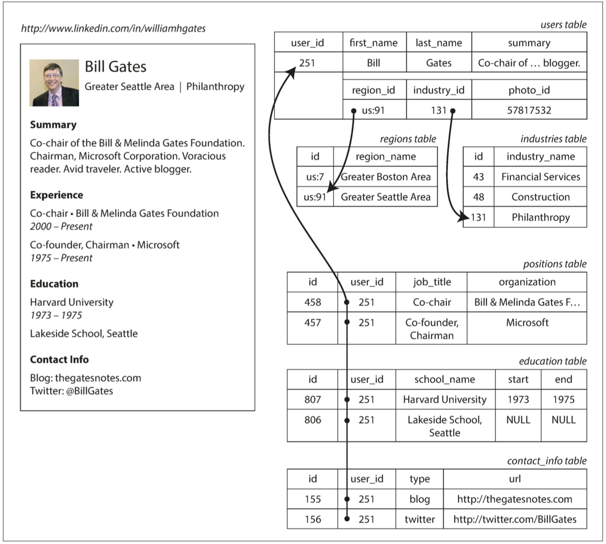
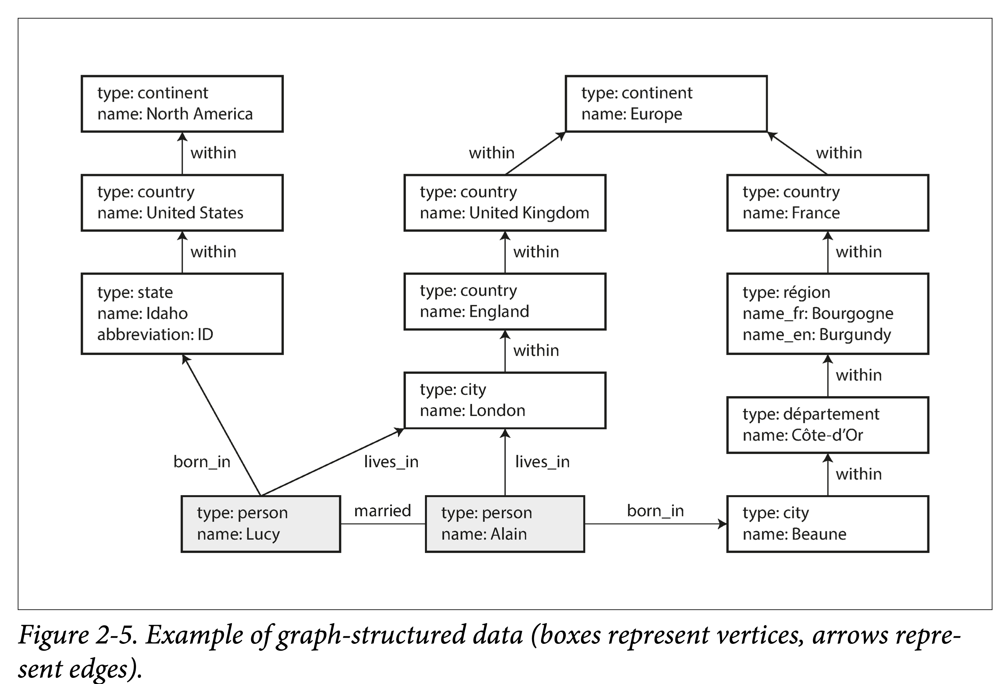

数据模型和查询语言
介绍用于数据存储和查询的通用数据模型。
每层通过提供一个简单的数据模型来隐藏下层的复杂性。
A data model is an abstract model that organizes elements of data and standardizes how they relate to one another and to the properties of real-world entities. —https://en.wikipedia.org/wiki/Data_model
在历史上，数据最开始被表示为一棵大树（层次数据模型），但是这不利于表示多对多的关系，所以发明了关系模型来解决这个问题。
最近，开发人员发现一些应用程序也不适合采用关系模型。新的非关系型 “NoSQL” 数据存储分化为两个主要方向：
- 文档数据库：数据来自于自包含文档，且一个文档与其他文档之间的关联很少；
- 图数据库：所有数据都可能会相关联；
这三种模型（文档，关系和图形）在今天都被广泛使用，并且在各自的领域都发挥很好。
文档数据库和图数据库有一个共同点，那就是它们通常不会将存储的数据强制约束为特定模式：
- 应用程序很可能仍会假定数据具有一定的结构；区别仅在于模式是明确的（写入时强制）还是隐含的（读取时处理）
仍然有许多数据模型没有提到：
- 基因组数据：相似性搜索，相似但完全不同的大型字符串数据匹配，专用软件GenBank\(^{[16]}\)。
- 全文检索：经常与数据库一起使用的模型，软件如 ElasticSearch。
关系模型与文档模型
关系模型的每个竞争者都在其时代产生了大量的炒作，但从来没有持续\(^{[2]}\)。
融合关系型和文档模型是未来数据库发展的一条很好的途径。
- MyQL 5.7, PostgreSQL 9.3 支持 JSON 文档。
1970 年提出关系模型（SQL）\(^{[1]}\)：OLAP/OLTP/HTAP
-
支持一对一、一对多、多对一、多对多关系；
-
消除数据重复（ID作为关键字联结）是数据库规范化的核心思想；
-
写时模式：所有记录都具有相同的数据结构；
NoSQL 的诞生
NoSQL\(^{[3]}\)（Not only SQL）是对不同于传统的关系数据库的数据库管理系统的统称。根据 DB-Engines 排名，现在最受欢迎的 NoSQL 前几名为：MongoDB，Redis，ElasticSearch，Cassandra。
其催动因素有：
- 处理更大数据集：更强伸缩性、更高吞吐量
- 开源免费的兴起：冲击了原来把握在厂商的标准
- 特化的查询操作：关系数据库难以支持的，比如图中的多跳分析
- 表达能力更强：关系模型约束太严，限制太多
对象关系不匹配
如果数据存储在关系表中，那么需要一个笨拙的转换层，处于应用程序代码中的对象和表、行、列的数据库模型之间。模型之间的不连贯有时被称为 阻抗不匹配（impedance mismatch）。
Hibernate 这样的 对象关系映射（ORM object-relational mapping） 框架可以减少这个转换层所需的样板代码的数量，但是它们不能完全隐藏这两个模型之间的差异。
下图展示如何在关系模式中表示简历（一个 LinkedIn 简介）：
- 传统 SQL 模型（SQL：1999 之前），规范化表示，采用外键引用的形式，多表之间进行关联；
- 后续 SQL 支持对结构化数据（Json）和XML类型数据的支持，如 PostgreSQL，支持查询和索引；

像简历这样自包含文档的数据结构而言，JSON 表示是非常合适的，如 MongoDB。
- 比多表模式具备更好的局部性，查询整个简历时，其速度要快；
多对一和多对多的关系
存储 ID 还是文本字符串，这是个 副本（duplication） 问题。
- 当使用 ID 时，对人类有意义的信息（比如单词：Philanthropy）只存储在一处，所有引用它的地方使用 ID（ID 只在数据库中有意义）
- 当直接存储文本时，对人类有意义的信息会复制在每处使用记录中。
使用 ID 的好处：
- ID 可以保持不变，即使它标识的信息发生变化，但任何对人类有意义的东西都可能需要在将来某个时候改变；
- 如果这些信息被复制，所有的冗余副本都需要更新。这会导致写入开销，也存在不一致的风险
- 去除此类重复是数据库 规范化（normalization） 的关键思想
文档模型不太适合多对一（多对多）的关系，如许多人生活在一个特定的地区，许多人在一个特定的行业工作
- 对连接的支持通常很弱，如果文档数据库不支持连接，则只能在应用层进行连接；
即便应用程序的最初版本适合无连接的文档模型，随着功能添加到应用程序中，数据会变得更加互联。
文档数据库是否在重蹈覆辙？
文档数据库和 NoSQL 重启了辩论：如何以最佳方式在数据库中表示多对多关系
- 迄今为止，文档数据库没有走 网状模型 CODASYL 的老路。
关系模型（relational model，变成了 SQL并统治了世界）和 网状模型（network model，最初很受关注，但最终变得冷门）。这两个阵营之间的 “大辩论” 在 70 年代持续了很久时间\(^{[2]}\)。
- 网状模型（CODASYL 模型）是层次模型的推广，每条记录可能有多个父节点；
- 其跟图模型有本质上的区别，见下文的图数据库；
在表示多对一和多对多的关系时，关系数据库和文档数据库并没有根本的不同：在这两种情况下，相关项目都被一个唯一的标识符引用，这个标识符在关系模型中被称为 外键，在文档模型中称为 文档引用。
关系型数据库和文档数据库的对比
本章将只关注数据模型中的差异。
- 对高度关联的数据而言，文档模型是极其糟糕的，关系模型是可以接受的，而选用图形模型（请参阅 “图数据模型”）是最自然的。
文档模型：更适用于
- 存在许多不同类型的对象，将每种类型的对象放在自己的表中是不现实的。
- 数据的结构由外部系统决定。你无法控制外部系统且它随时可能变化。
适用场景
文档模型（JSON）：如简历的存储，类似文档的结构，或何时何地发生何事的时序数据\(^{[10]}\)
- 适合一对一、一对多的关系；
- 不适合多对一、多对多的关系，联结的支持很弱\(^{[4]}\)；
- 读时模式：记录并不是都是同样的数据结构（动态，不可预估）；
- 局部性更好：对于应用程序频繁访问整个文档的情形；
- 通常建议文档应该尽量小且避免写入时增加文档大小\(^{[9]}\)；
在表示多对一和多对多的关系时，关系数据库和文档数据库没有根本不同，由唯一的标识符引用：
- 关系模型中称为外键，文档模型中称为文档引用；
- 文档模型强在模式灵活性（读模式），局部性带来较好性能，注重整体，更接近应用的数据结构；
- 关系模型（写模式）强在连接操作、多对一和多对多关系更简洁的表达上，注重部分（分解）；
模式灵活性
读时模式（schema-on-read）和写时模式（schema-on-write）\(^{[5]}\)：
- "写时模式"：数据在写入数据库时对照表模式进行检查；
- "读时模式"：在需要查询分析的时候再为数据设置schema进行验证（失败设置为NULL），底层存储不会在数据加载时进行验证
改变其数据格式时：如将用户名改为姓氏和名称：
- 文档数据库（读模式）：只需开始写入具有新字段的新文档，并在应用程序中使用代码来处理读取旧文档的情况；
if (user && user.name && !user.first_name) {
// Documents written before Dec 8, 2013 don't have first_name
user.first_name = user.name.split(" ")[0];
}
-
数据库（写模式）：通常会执行以下 迁移（migration） 操作
-
MYSQL 进行 ALTER TABLE时会把现在的整张表进行复制，但有工具可以解决\(^{[6-8]}\)
- 也可以将
first_name设置为默认值NULL，并在读取时再填充，就像使用文档数据库一样
ALTER TABLE users ADD COLUMN first_name text;
UPDATE users SET first_name = split_part(name, ' ', 1); -- PostgreSQL
UPDATE users SET first_name = substring_index(name, ' ', 1); -- MySQL
查询的数据局部性
在 第三章 将还会看到更多关于局部性的内容。
文档通常以单个连续字符串形式进行存储：
- 访问整个文档（例如，将其渲染至网页），存储局部性会带来性能优势；
- 只访问文档其中的一小部分，数据库通常需要加载整个文档，对于大型文档来说这种加载行为很浪费；
- 更新文档时，通常需要整个重写，只有不改变文档大小的修改才可以容易地原地执行；
文档和关系数据库的融合
关系模型和文档模型的混合是未来数据库一条很好的路线。
数据库支持 JSON 文档：
- 9.3 版本开始的 PostgreSQL \(^{[11]}\)，从 5.7 版本开始的 MySQL 以及从版本 10.5 开始的 IBM DB2\(^{[12]}\)也对 JSON 文档提供了类似的支持级别。
文档数据库支持联结：
- 一些 MongoDB 驱动程序可以自动解析数据库引用（有效地执行客户端连接，可能比在数据库中执行的连接慢，需要额外的网络往返，并且优化更少）。
数据查询语言
命令式
- 以特定顺序执行某些操作；
声明式：SQL 是声明式，Web 开发 Vue / CSS 也是声明式（JavaScript 的 DOM API 则是命令式）
- 指定所需数据模式，结果满足的条件以及如何转换数据，不需要指明如何实现；
- SQL 相当有限的功能性为数据库提供了更多自动优化的空间，且对用户不感知；
- 通常适用于并行执行\(^{[13]}\)；
Map-Reduce：既不是一个声明式的查询语言，也不是一个完全命令式的查询 API，而是处于两者之间
- 查询的逻辑用代码片段（可复用）来表示
- 函数式编程的思想，部分封装（用户不需定义数据集的遍历方式、Shuffle过程，但需要定义单条数据处理过程）；
- 纯函数，不能带有副作用，只能使用传递的数据作为输入（幂等）；
- SQL 可以用 map-reduce 等分布式编程模型实现
示例：每月看到多少鲨鱼
- PostgreSQL
SELECT
date_trunc('month', observation_timestamp) AS observation_month,
sum(num_animals) AS total_animals
FROM observations
WHERE family = 'Sharks'
GROUP BY observation_month;
- MongoDB 的 MapReduce
db.observations.mapReduce(function map() {
var year = this.observationTimestamp.getFullYear();
var month = this.observationTimestamp.getMonth() + 1;
emit(year + "-" + month, this.numAnimals);
},
function reduce(key, values) {
return Array.sum(values);
},
{
query: {
family: "Sharks"
},
out: "monthlySharkReport"
});
- MongoDB 的聚合管道（声明式）：NoSQL 系统可能会意外发现自己只是重新发明了一套经过乔装改扮的 SQL
db.observations.aggregate([
{ $match: { family: "Sharks" } },
{ $group: {
_id: {
year: { $year: "$observationTimestamp" },
month: { $month: "$observationTimestamp" }
},
totalAnimals: { $sum: "$numAnimals" } }}
]);
图状数据模型
适用于高度关联的数据，如社交网络、Web图、公路/铁路网；
图数据模型的基本概念一般有三个：点，边和附着于两者之上的属性。
常见的可以用图建模的场景：
| 例子 | 建模 | 应用 |
|---|---|---|
| 社交图谱 | 人是点，follow 关系是边 | 六度分隔，信息流推荐 |
| 互联网 | 网页是点，链接关系是边 | PageRank |
| 路网 | 交通枢纽是点，铁路/公路是边 | 路径规划，导航最短路径 |
| 洗钱 | 账户是点，转账关系是边 | 判断是否有环 |
| 知识图谱 | 概念时点，关联关系是边 | 启发式问答 |
示例图 2-5：

图模型（property graph）
Neo4j、Titan、InfiniteGraph
数据结构
| 点 (vertices, nodes, entities) | 边 (edges, relations, arcs) |
|---|---|
| 全局唯一 ID | 全局唯一 ID |
| 出边集合 | 起始点 |
| 入边集合 | 终止点 |
| 属性集（kv 对表示） | 属性集（kv 对表示） |
| 表示点类型的 type？（异构图） | 表示边类型的 label |
图是一种很灵活的建模方式：
- 任何两点间都可以插入边，没有任何模式限制。
- 对于任何顶点都可以高效找到其入边和出边，从而进行图遍历。
- 使用多种标签来标记不同类型边（关系）。
图有利于演化：向应用程序添加功能时，图可以容易扩展以适应数据结构的不断变化。
- 人对食物过敏，可以新增过敏源顶点，人和过敏源的边表示过敏；
Cypher 查询语言
Cypher 是 Neo4j 创造的一种查询语言。
图2-5左边部分的插入语句：
CREATE
(NAmerica:Location {name:'North America', type:'continent'}),
(USA:Location {name:'United States', type:'country' }),
(Idaho:Location {name:'Idaho', type:'state' }),
(Lucy:Person {name:'Lucy' }),
(Idaho) -[:WITHIN]-> (USA) -[:WITHIN]-> (NAmerica),
(Lucy) -[:BORN_IN]-> (Idaho)
查询：找出所有从美国移居到欧洲的人名。
MATCH
(person) -[:BORN_IN]-> () -[:WITHIN*0..]-> (us:Location {name:'United States'}),
(person) -[:LIVES_IN]-> () -[:WITHIN*0..]-> (eu:Location {name:'Europe'})
RETURN person.name
如果用SQL进行查询，则需要通过递归公用表达式（WITH RECURSIVE））表示 :WITHIN*0..。
-
连接的数量事先并不确定
-
示例：找出所有从美国移居到欧洲的人名（图查询 4行，SQL 查询 29 行）
WITH RECURSIVE
-- in_usa 包含所有的美国境内的位置 ID
in_usa(vertex_id) AS (
SELECT vertex_id FROM vertices WHERE properties ->> 'name' = 'United States'
UNION
SELECT edges.tail_vertex FROM edges
JOIN in_usa ON edges.head_vertex = in_usa.vertex_id
WHERE edges.label = 'within'
),
-- in_europe 包含所有的欧洲境内的位置 ID
in_europe(vertex_id) AS (
SELECT vertex_id FROM vertices WHERE properties ->> 'name' = 'Europe'
UNION
SELECT edges.tail_vertex FROM edges
JOIN in_europe ON edges.head_vertex = in_europe.vertex_id
WHERE edges.label = 'within' ),
-- born_in_usa 包含了所有类型为 Person，且出生在美国的顶点
born_in_usa(vertex_id) AS (
SELECT edges.tail_vertex FROM edges
JOIN in_usa ON edges.head_vertex = in_usa.vertex_id
WHERE edges.label = 'born_in' ),
-- lives_in_europe 包含了所有类型为 Person，且居住在欧洲的顶点。
lives_in_europe(vertex_id) AS (
SELECT edges.tail_vertex FROM edges
JOIN in_europe ON edges.head_vertex = in_europe.vertex_id
WHERE edges.label = 'lives_in')
SELECT vertices.properties ->> 'name'
FROM vertices
JOIN born_in_usa ON vertices.vertex_id = born_in_usa.vertex_id
JOIN lives_in_europe ON vertices.vertex_id = lives_in_europe.vertex_id;
三元存储模型（triple-store）
Datomic、AllegroGraph
（lucy, age, 33), (lucy, marriedTo, alain)
| 概念 | 定义 |
|---|---|
| Subject（主体） | 对应图中的一个点（_:someName) |
| Predicate（谓语） | 1. 如果 Object 是原子数据，则 2. 如果 Object 是另一个 Object，则 Predicate 对应图中的边。 |
| Object（客体） | 1. 一个原子数据，如 string 或者 number。 2. 另一个 Subject。 |
图2-5左边部分的插入语句：Turtle 3元组
@prefix : <urn:example:>.
_:lucy a: Person; :name "Lucy"; :bornIn _:idaho
_:idaho a: Location; :name "Idaho"; :type "state"; :within _:usa.
_:usa a: Location; :name "United States"; :type "country"; :within _:namerica.
_:namerica a :Location; :name "North America"; :type "continent".
语义网
万维网之父 Tim Berners Lee 于 1998 年提出，知识图谱前身。其目的在于对网络中的资源进行结构化，从而让计算机能够理解网络中的数据。
- 三元组存储模型其实是完全独立于语义网存在
RDF（Resource Description Framwork），让不同的网站以一致的格式发布数据，供计算机可读。
- 至今（2021年）没有在实践中见到任何靠谱的实现；
- 技术栈影响了后来的知识图谱和图查询语言。
SparQL 查询语言
采用 RDF 数据模型的三元存储查询语言\(^{[14,15]}\)。
查询：找出所有从美国移居到欧洲的人名。
- RDF 不区分属性和边，而只是将它们作为谓语，所以可以使用相同的语法来匹配属性
PREFIX : <urn:example:>
SELECT ?personName WHERE {
?person :name ?personName.
?person :bornIn / :within* / :name "United States".
?person :livesIn / :within* / :name "Europe".
}
图模型与网络模型
图模型是网络模型旧瓶装新酒吗？否，他们在很多重要的方面都不一样。
| 模型 | 图模型（Graph Model） | 网络模型（Network Model） |
|---|---|---|
| 连接方式 | 任意两个点之间都有可以有边 | 指定嵌套约束（哪种记录类型可以嵌套在其他记录类型） |
| 记录查找 | 1. 使用全局 ID 2. 使用属性索引 3. 使用图遍历 |
只能使用路径查询 |
| 有序性 | 点和边都是无序的 | 记录的子节点是有序集合，在插入时需要考虑维持有序的开销 |
| 查询语言 | 即可命令式，也可以声明式 | 命令式的 |
参考文献
- Edgar F. Codd: “A Relational Model of Data for Large Shared Data Banks,” Communications of the ACM, volume 13, number 6, pages 377–387, June 1970. doi:10.1145/362384.362685
- Michael Stonebraker and Joseph M. Hellerstein: “What Goes Around Comes Around,” in Readings in Database Systems, 4th edition, MIT Press, pages 2–41, 2005. ISBN: 978-0-262-69314-1
- Eric Evans: “NoSQL: What's in a Name?,” blog.sym-link.com, October 30, 2009.
- Sarah Mei: “Why You Should Never Use MongoDB,” sarahmei.com, November 11, 2013.
- Martin Odersky: “The Trouble with Types,” at Strange Loop, September 2013.
- “Percona Toolkit Documentation: pt-online-schema-change,” Percona Ireland Ltd., 2013.
- Rany Keddo, Tobias Bielohlawek, and Tobias Schmidt: “Large Hadron Migrator,” SoundCloud, 2013.
- Shlomi Noach: “gh-ost: GitHub's Online Schema Migration Tool for MySQL,” githubengineering.com, August 1, 2016.
- “The MongoDB 2.4 Manual,” MongoDB, Inc., 2013.
- Sandeep Parikh and Kelly Stirman: “Schema Design for Time Series Data in MongoDB,” blog.mongodb.org, October 30, 2013.
- “PostgreSQL 9.3.1 Documentation,” The PostgreSQL Global Development Group, 2013.
- Bobbie J. Cochrane and Kathy A. McKnight: “DB2 JSON Capabilities, Part 1: Introduction to DB2 JSON,” IBM developerWorks, June 20, 2013.
- Joseph M. Hellerstein: “The Declarative Imperative: Experiences and Conjectures in Distributed Logic,” Electrical Engineering and Computer Sciences, University of California at Berkeley, Tech report UCB/EECS-2010-90, June 2010.
- “Apache Jena,” Apache Software Foundation.
- Steve Harris, Andy Seaborne, and Eric Prud'hommeaux: “SPARQL 1.1 Query Language,” W3C Recommendation, March 2013.
- Dennis A. Benson, Ilene Karsch-Mizrachi, David J. Lipman, et al.: “GenBank,” Nucleic Acids Research, volume 36, Database issue, pages D25–D30, December 2007. doi:10.1093/nar/gkm929